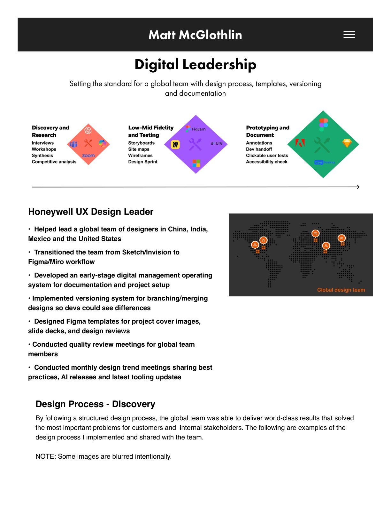
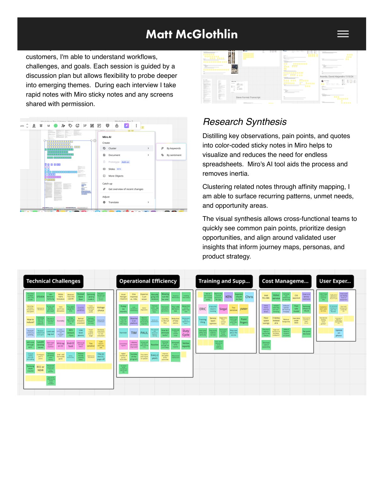
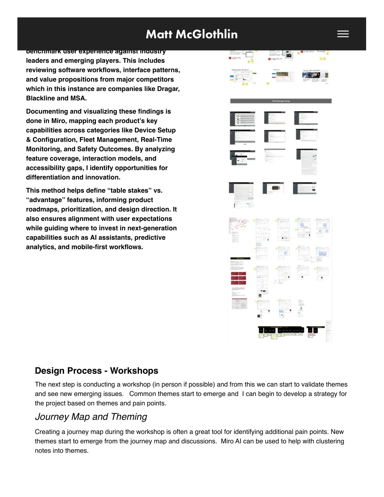
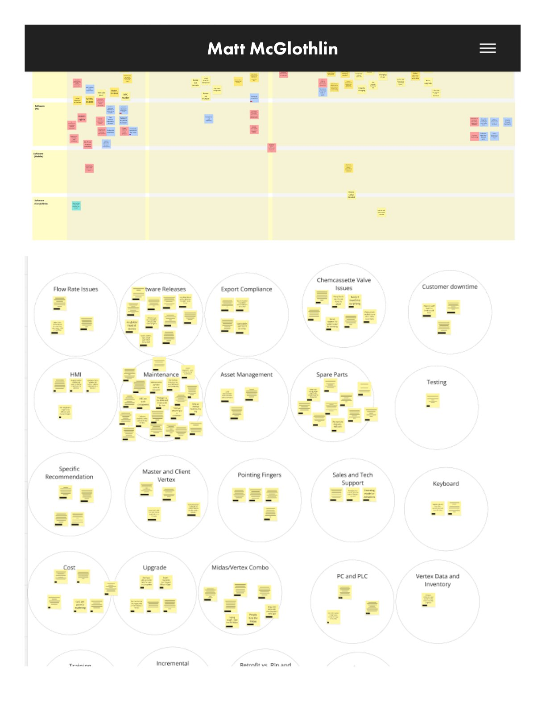
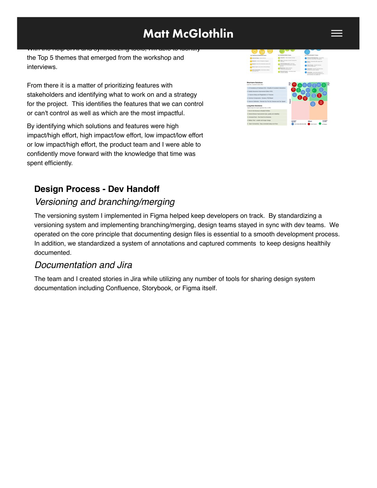
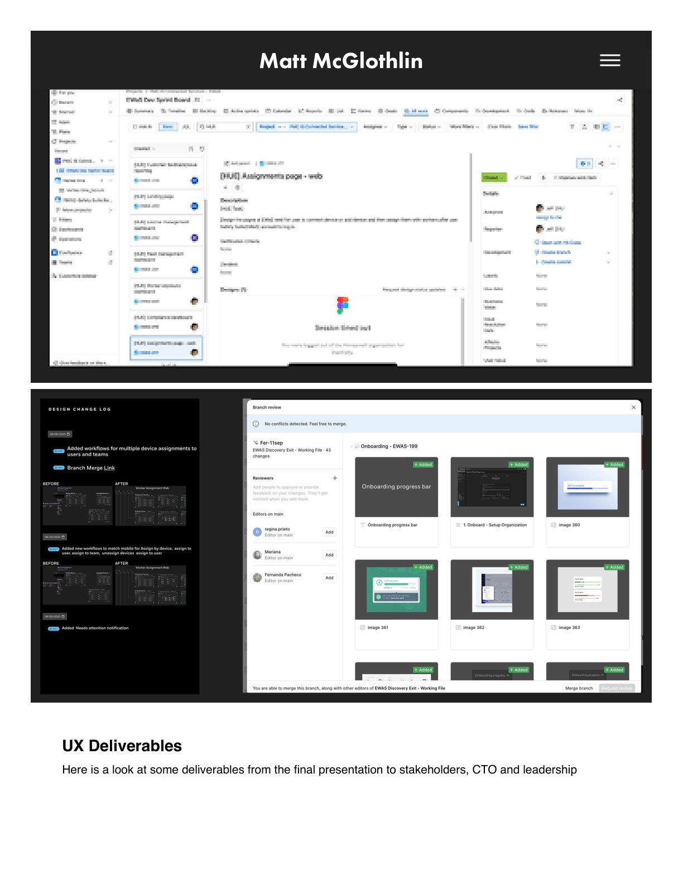
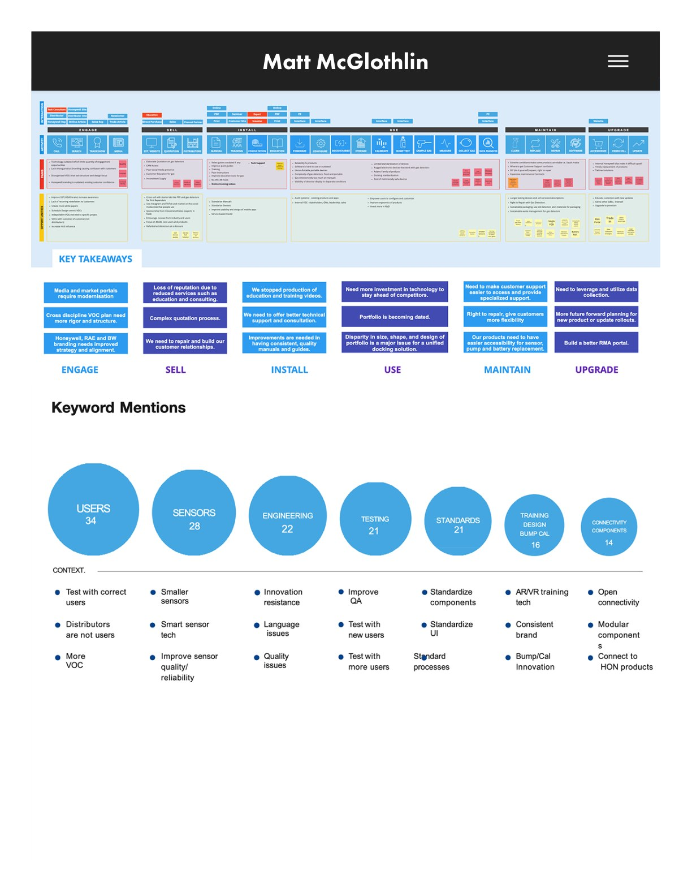
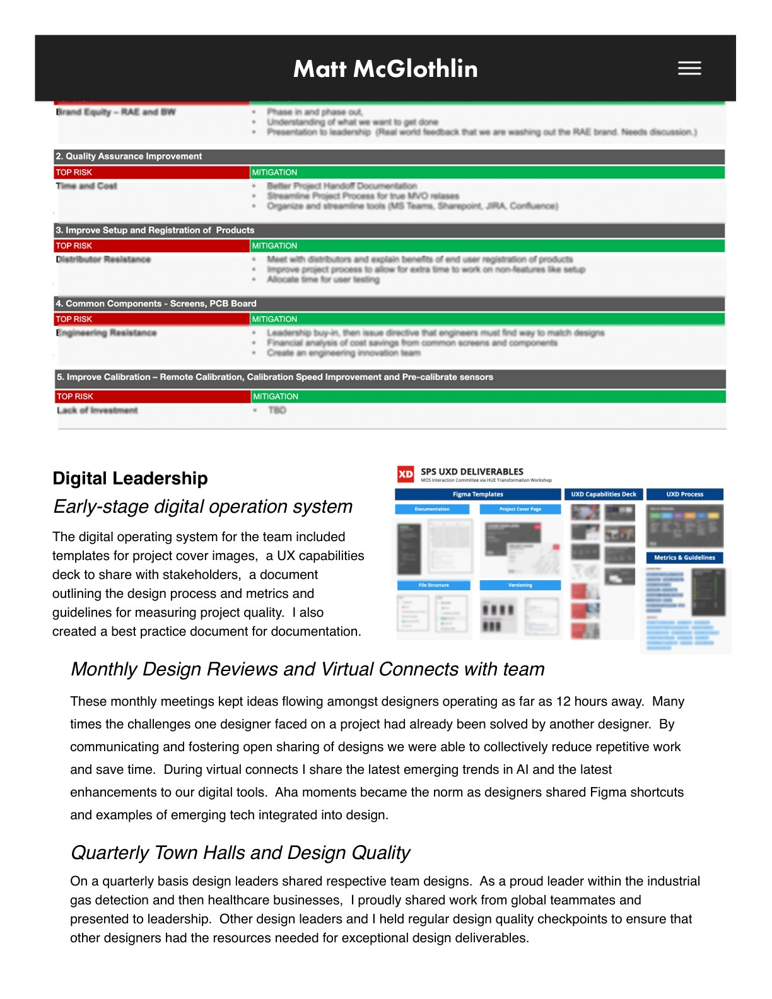
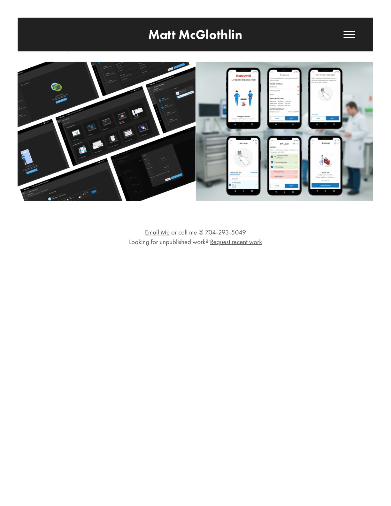

Digital Leadership
Setting the standard for a global team with design process, templates, versioning, and documentation.
As a UX design leader at Honeywell, I helped lead a global team of designers across China, India, Mexico, and the United States — transitioning the team from Sketch and InVision to a Figma and Miro workflow, implementing versioning for branching and merging designs, and running monthly design trend and quality review meetings to keep the team sharp and consistent.








